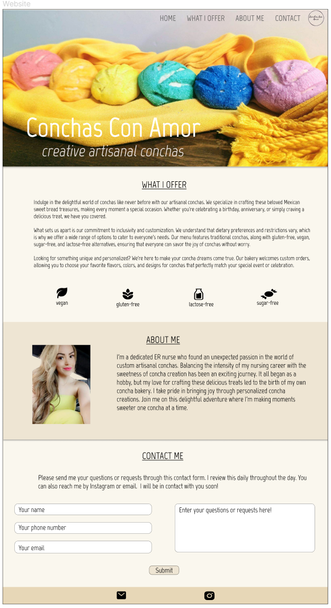
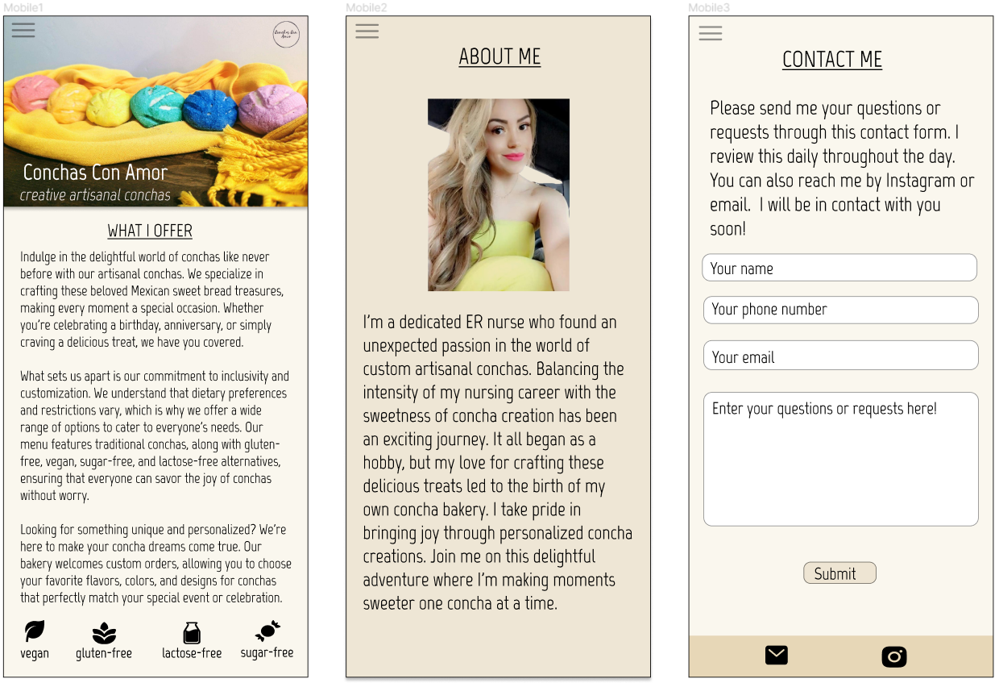

My project is a one-page site composed of different sections aimed to be fluid and easy to read.
The heading encompasses the navigation links and logo aligned to the right of the page. The navigation links change color while hovering to let the user/customer know that the links are live and clickable. The main landing image is also stored in the heading. I want the image to be large and colorful to grab the attention of the user while being inviting. The image on this section also includes the name of the business in large font for users to easily identify the business and what it produces. I want this image to have a smooth transition to the next section by providing a subtle shadow on the lower portion of the image/section
This section includes a thorough description of the services provided by the business. This section is large and has pictograms to let users know immediately that the business caters to different dietary needs. This section is also a neutral color that aims to be inviting and inclusive.
This section is a different color in neutrality to represent a transition into a different section. The section contains an image of the business owner and an overview of why they decided to create a business. The image is aligned to the left while the text takes over the majority of the space within this section. The bottom of this section also offers a shadow effect on the bottom to provide a smooth transition to the next section.
This section contains a brief summary of how to contact the business owner. The business owner does not have a set schedule on opening and closing hours, thus, this statement and section allow the user to send their requests for review. The description does notify the customer that the owner will be in touch soon and how often they check requests/questions. The input fields in this section are a different color from the background of the section to depict a live form. The submit button changes color when hovering.
This small section is depicted in a different neutral color and contains link to the owner's Instagram and email.
 